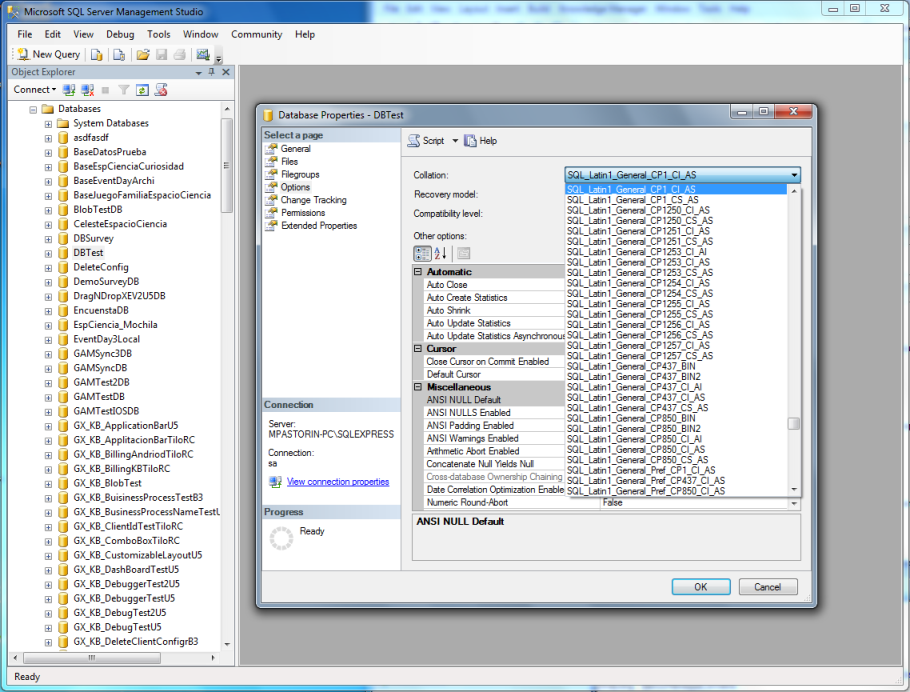

Diacritics are accents used in some languages, they may appear above or below a letter, or in some other position such as within the letter or between two letters. It is important to manage them correctly so that your application works as espected no matter the language accents. In GeneXus it is important because you may want to have different behaviour depending in where the conditions are evaluated (client or server side). To manage accent sensitivity you have two sides: Server sideIn most of the DBMS it is possible to configure accent sensibility. SQL Server configurationIn SQL Server\data base properties\Options\Collation, you would have to select one with "_AI" (accent insensitive) if you want this to be solved. By default SQL server is case insensitive and accent sensitive.  Note: After changing collation, you need to create again the Database tables from GeneXus in order for it to take effect. MySQL configurationIn MySQL, by default is "latin1, latin1_swedish_ci", which already covers cases of diacritics. By default MySQL is case insensitive and accent insensitive. If you want to change this you can configure it on your MySQL client. SQLite configurationIn SQLite it is not possible to change accent sensibility. By default SQLite is case insensitive and accent sensitive. Client sideSearch, filters and conditions using RemoveDiacritics MethodUse RemoveDiacritics Method on your GeneXus code. NoteRemoveDiacritics method is specific to a string and the above mentioned DBMS configurations apply to the whole Database. See also |
| Backlinks |
| RemoveDiacritics Method |